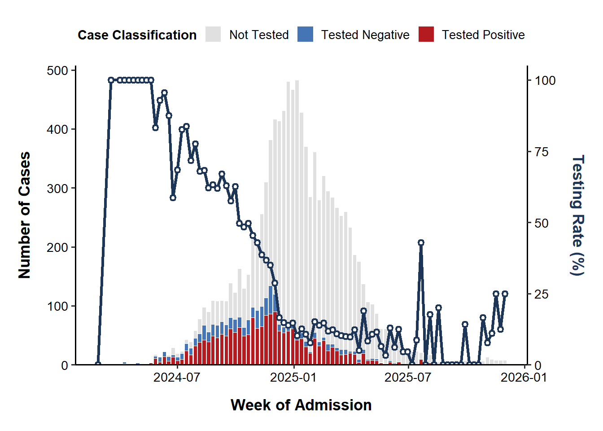

path2data <- paste0("C:/Users/ongph/github/data")Data visualisation
Constant
Path to data:
Files names:
# Case notification
cases_file <- "measles/measles_cases_2019-12.2025.xlsx"
# Vaccination coverage
vax_hcmc_file <- "vax/vaxreg_hcmc_measles.rds"
# Population metadata
map_hcmc_file <- "map/gadm41_hcmc_district.rds"
census_file <- "census2019_hcm.rds"Packages
Required packages:
required <- c("openxlsx", "janitor", "tidyverse", "lubridate", "stringi", "sf")
# Installing those that are not installed yet:
to_install <- required[! required %in% installed.packages()[, "Package"]]
if (length(to_install)) install.packages(to_install)
# Loading the packages for interactive use:
invisible(sapply(required, library, character.only = TRUE))
Attaching package: 'janitor'The following objects are masked from 'package:stats':
chisq.test, fisher.test── Attaching core tidyverse packages ──────────────────────── tidyverse 2.0.0 ──
✔ dplyr 1.2.0 ✔ readr 2.1.5
✔ forcats 1.0.0 ✔ stringr 1.5.1
✔ ggplot2 3.5.2 ✔ tibble 3.2.1
✔ lubridate 1.9.4 ✔ tidyr 1.3.1
✔ purrr 1.0.4
── Conflicts ────────────────────────────────────────── tidyverse_conflicts() ──
✖ dplyr::filter() masks stats::filter()
✖ dplyr::lag() masks stats::lag()
ℹ Use the conflicted package (<http://conflicted.r-lib.org/>) to force all conflicts to become errors
Linking to GEOS 3.13.1, GDAL 3.11.0, PROJ 9.6.0; sf_use_s2() is TRUEFunctions
Clean Vietnamese district name
clean_district <- function(x) {
x |>
stri_trans_general("Latin-ASCII") |>
str_to_lower() |>
str_squish() |>
str_replace_all("đ", "d") |>
str_remove("^(quan |huyen |thanh pho |tp )")
}Data
Case report data:
df_case <- file.path(path2data, cases_file) |>
read.xlsx(sheet = 4) |>
clean_names() |>
mutate(
ngay_nv = as.Date(as.numeric(ngay_nv), origin = "1899-12-30"),
ngay_sinh = as.Date(as.numeric(ngay_sinh), origin = "1899-12-30"),
age = time_length(interval(ngay_sinh, ngay_nv), "year"),
district = clean_district(quan_huyen)
)Test capacity
# Categorize the cases and format the date
df_case_clean <- df_case %>%
filter(year(ngay_nv) >= 2024) |>
mutate(
week_nv = floor_date(ngay_nv, unit = "week", week_start = 1),
test_status = case_when(
pl_chan_doan %in% c("Sởi XĐ PTN", "Xác định phòng xét nghiệm") ~ "Tested Positive",
pl_chan_doan == "Loại trừ sởi" ~ "Tested Negative",
pl_chan_doan %in% c("Sởi nghi lâm sàng", "Có thể", "Nghi Ngờ",
"Nghi ngờ (Lâm sàng)", "Nghi ngờ (lâm sàng)") ~ "Not Tested",
TRUE ~ "Other/Unknown" # Catches any missing or unlisted classifications
)
)
# Summarize data by week for the bar chart
df_bar <- df_case_clean %>%
count(week_nv, test_status, name = "cases")
# Calculate the weekly testing percentage for the line chart
df_line <- df_case_clean %>%
group_by(week_nv) %>%
summarize(
total_cases = n(),
tested_cases = sum(test_status %in% c("Tested Positive", "Tested Negative")),
percent_tested = (tested_cases / total_cases) * 100,
.groups = "drop"
)
# Calculate a scaling factor based on the maximum weekly cases
max_cases <- max(df_line$total_cases, na.rm = TRUE)
# Ensure the secondary axis goes from 0 to 100% smoothly against the max cases
scale_factor <- max_cases / 100
ggplot() +
# 1. Stacked Bar Chart (Epi Curve)
# Added 'color = "white"' and a slight linewidth to separate stacked bars crisply
geom_col(data = df_bar, aes(x = week_nv, y = cases, fill = test_status),
color = "white", linewidth = 0.3, width = 6) +
# 2. Line Chart (Testing Percentage)
# Made the line thicker and added styled points (shape 21 allows a fill color)
geom_line(data = df_line, aes(x = week_nv, y = percent_tested * scale_factor),
color = "#1D3557", linewidth = 1.2) +
geom_point(data = df_line, aes(x = week_nv, y = percent_tested * scale_factor),
color = "#1D3557", fill = "white", shape = 21, size = 1.5, stroke = 1.2) +
# 3. Scales and Dual Axes
scale_y_continuous(
name = "Number of Cases",
expand = expansion(mult = c(0, 0.05)), # Removes the floating gap between the x-axis and the bars
sec.axis = sec_axis(~ . / scale_factor, name = "Testing Rate (%)")
) +
# Optional: Better date formatting for the X-axis (uncomment if week_nv is a Date object)
# scale_x_date(
# date_breaks = "2 weeks",
# date_labels = "%b %d",
# expand = expansion(mult = c(0.01, 0.01))
# ) +
# 4. Publication Color Palette (High Contrast, Colorblind Safe)
scale_fill_manual(values = c(
"Tested Positive" = "#B31B21", # Deep Red (Draws attention to confirmed cases)
"Tested Negative" = "#4575B4", # Muted Blue (Distinct but less alarming)
"Not Tested" = "#E0E0E0", # Light Grey (Fades into the background)
"Other/Unknown" = "#878787" # Dark Grey
)) +
# 5. Theming and Labels
labs(
x = "Week of Admission",
fill = "Case Classification"
) +
# Base size 12-14 is usually requested by journals for legibility
theme_classic(base_size = 13, base_family = "sans") +
theme(
# Move legend to top to save vertical space for the data
legend.position = "top",
legend.title = element_text(face = "bold", size = 11),
legend.text = element_text(size = 10),
legend.key.size = unit(0.5, "cm"),
# Bold axes titles and adjust margins so they don't crowd the numbers
axis.title.x = element_text(margin = margin(t = 12), face = "bold"),
axis.title.y.left = element_text(margin = margin(r = 12), face = "bold", color = "black"),
# Match the secondary axis title color to the line chart color so the reader links them intuitively
axis.title.y.right = element_text(margin = margin(l = 12), face = "bold", color = "#1D3557"),
# Ensure tick text is stark black, not grey
axis.text.x = element_text(color = "black"),
axis.text.y = element_text(color = "black"),
# Add a slight margin around the whole plot
plot.margin = margin(t = 15, r = 15, b = 15, l = 15)
)
# ggsave("figs/test_rate.png", width = 6, height = 3, dpi = 300, bg = "white")